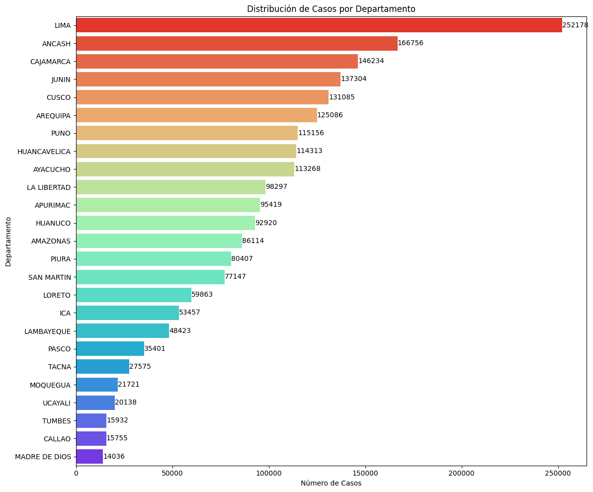
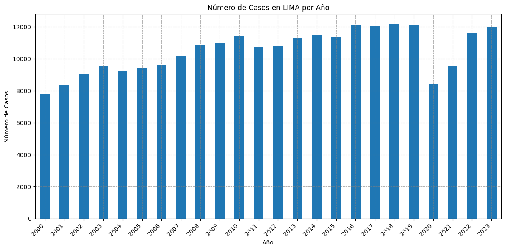
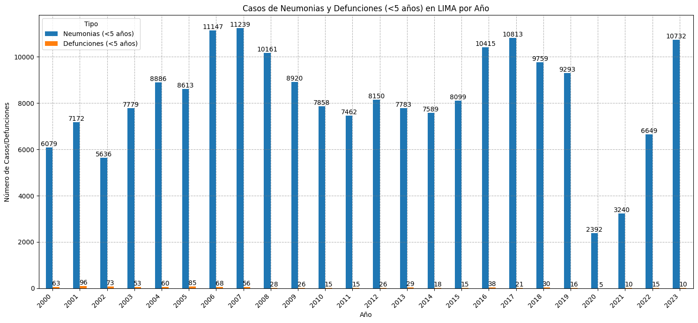
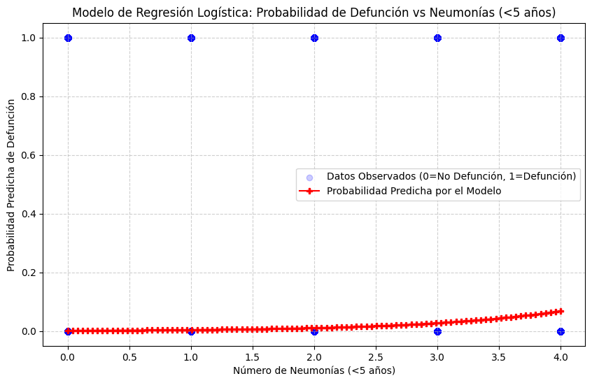

Bioestadística para Investigación Científica
usando Python con Inteligencia Artificial
| Autor | :VR ROJAS |
|---|---|
| :sacha.analytics@gmail.com | |
| Web | :sacha-analytics |
8. Diseño de Caso Estudio: Infecciones Respiratorias Agudas#
En una era de riesgos sanitarios de enfermedades transmisibles emergentes y reemergentes, no debe subestimarse la importancia de la prevención de infecciones ni de las medidas de control en entornos sanitarios. La transmisión de enfermedad transmisible/patógeno es un tema en constante evolución, y la transmisión de patógenos que causan enfermedades respiratorias agudas (ERA) no es una excepción. El principal modo de transmisión de la mayoría de las ERA es a través de microgotas, pero en el caso de algunos patógenos la transmisión también ocurre a través del contacto (incluyendo contaminación de las manos seguida de autoinoculación) y de aerosoles respiratorios infecciosos de diversos tamaños y a corta distancia. Debido a que muchos síntomas de las ERA no son específicos y que no siempre hay pruebas diagnósticas rápidas disponibles, con frecuencia no es posible conocer la etiología de inmediato. Además, puede no haber disponibilidad de intervenciones farmacéuticas (vacunas, antivirales, antimicrobianos) para las ERA.
Las ERA están directamente vinculadas a la calidad del aire. Los contaminantes atmosféricos actúan como desencadenantes o agrabantes, especialmente en poblaciones vulnerables (niños, ancianos y personas con enfermedades crónicas).
Fuentes
I. Marco Teórico#
1.1 Objetivo#
Analizar la distribución y características de casos de infecciones respiratorias agudas en función de las variables departamento, defunciones y Tipo de Diagnóstico utilizando métodos bioestadístico.
1.2 Fundamentos Bioestadisiticos#
1.2.1 Tipos de variables#
departamento: categórica nomial (Femenino, Masculino).
defunciones: cuantitativa continua.
Tipo de Diagnóstico (Tipo de Dx): categórica nominal
1.2.2 Métodos estadísticos relevantes#
Estadística descriptiva univariada y bivariada
Distribución de frecuencias.
Medidas de tendencia central y dispersión.
Prueba de independencia (Chi-cuadrado)
Comparaciones de medidas (t-test, ANOVA)
Modelos de regresión logística (para predecir DX)
Modelos multivariantes (regresión logística si se desea modelar probabilidad de anemia)
Validación de supuestos estadísticos
II. Recolección de Datos#
2.1. Fuentes de datos#
Datos para caso estudio estudio: Infecciones Respiratoiras Agudas (IRA).
Datos para caso estudio estudio: Calidad del Aire Lima Metropolitana.
III. Metodología Práctica#
3.1. Gestión de archivos y directorios en la Nube#
3.1.1. Montar Google Drive#
La siguiente celda de código monta Google Drive a la nube (centro de datos remoto de Google)
from google.colab import drive
drive.mount('/content/drive')
---------------------------------------------------------------------------
ModuleNotFoundError Traceback (most recent call last)
Cell In[1], line 1
----> 1 from google.colab import drive
2 drive.mount('/content/drive')
File ~/anaconda3/envs/jupyterbook/lib/python3.13/site-packages/google/colab/__init__.py:20
17 from __future__ import division as _
18 from __future__ import print_function as _
---> 20 from google.colab import _import_hooks
21 from google.colab import _installation_commands
22 from google.colab import _shell_customizations
File ~/anaconda3/envs/jupyterbook/lib/python3.13/site-packages/google/colab/_import_hooks/__init__.py:16
1 # Copyright 2018 Google Inc.
2 #
3 # Licensed under the Apache License, Version 2.0 (the "License");
(...) 12 # See the License for the specific language govestylerning permissions and
13 # limitations under the License.
14 """Colab import customizations to the IPython runtime."""
---> 16 from google.colab._import_hooks import _altair
17 from google.colab._import_hooks import _cv2
20 def _register_hooks():
File ~/anaconda3/envs/jupyterbook/lib/python3.13/site-packages/google/colab/_import_hooks/_altair.py:16
1 # Copyright 2018 Google Inc. All rights reserved.
2 #
3 # Licensed under the Apache License, Version 2.0 (the "License");
(...) 12 # See the License for the specific language governing permissions and
13 # limitations under the License.
14 """Import hook for ensuring that Altair's Colab renderer is registered."""
---> 16 import imp
17 import logging
18 import os
ModuleNotFoundError: No module named 'imp'
3.1.2. Explorar archivos y directorios de Google Drive desde la nube#
En la siguiente celda de código se define la ruta de Google Drive en la computadora en la nube
drive_dir = "/content/drive/MyDrive/"
print(drive_dir)
['datos_abiertos_vigilancia_dengue_2000_2023.csv', 'datos_abiertos_vigilancia_malaria_2000_2008.csv', 'datos_abiertos_vigilancia_malaria_2009_2023.csv', 'Dataset_ExamenesLaboratorio_ConsultaExterna_PatologíasRelacionadas_Diabetes_202001_202404.csv', 'datos_abiertos_vigilancia_zoonosis_2000_2023.csv', 'datos_abiertos_vigilancia_iras_2000_2023.csv', 'datos_abiertos_vigilancia_enfermedad_carrion_2000_2023.csv', 'pmGenoma_25Septiembre2021.csv', 'pmGenoma_27Sep2023.csv', 'TB_DIGTEL_ANEMIA_TRATAMIENTOS.csv', 'primeras_100_filas_anemia.xlsx', 'primeras_100_filas_anemia.gsheet']
La funión explorar_drive permite inspeccionar cada carpeta y subcarpetas de Google Drive
def explorar_drive(nombre_carpeta):
import os
ruta_drive ="/content/drive/MyDrive/"
contenido_carpeta = os.listdir(ruta_drive + nombre_carpeta)
n_elem = len(contenido_carpeta)
print(f"Ruta: {ruta_drive + nombre_carpeta}")
print(f"Numero de elementos: {n_elem}")
for i in range(n_elem):
print(f"({i}) {contenido_carpeta[i]}")
datos_abiertos_vigilancia_dengue_2000_2023.csv
datos_abiertos_vigilancia_malaria_2000_2008.csv
datos_abiertos_vigilancia_malaria_2009_2023.csv
Dataset_ExamenesLaboratorio_ConsultaExterna_PatologíasRelacionadas_Diabetes_202001_202404.csv
datos_abiertos_vigilancia_zoonosis_2000_2023.csv
datos_abiertos_vigilancia_iras_2000_2023.csv
datos_abiertos_vigilancia_enfermedad_carrion_2000_2023.csv
pmGenoma_25Septiembre2021.csv
pmGenoma_27Sep2023.csv
TB_DIGTEL_ANEMIA_TRATAMIENTOS.csv
primeras_100_filas_anemia.xlsx
primeras_100_filas_anemia.gsheet
explorar_drive("Base_datos")
explorar_drive("Base_datos/biomedicina")
3.2 Preparar Entorno#
3.2.1 Importar paquetes#
# Paquete especializado en metodos numericos
import numpy as np
# Paquete especialozado manejo de estructuras de datos tipo tablas (Data Frames)
import pandas as pd
# Paquetes especializado para generar graficas
import seaborn as sns
import matplotlib.pyplot as plt
# Paquete especializados de estadística y metodos numéricos
from scipy import stats
# Paquete especializado en estadística
import statsmodels.api as sm
import statsmodels.formula.api as smf
#from statsmodels.formula.api import ols
3.2.2. Explorar herramientas de Paquetes#
print("Lista de todos los atributos (métodos, clases, funciones):")
herramientas_paquete = dir(np)
numero_herramientas = len(herramientas_paquete)
print(f"Numero de herramientas: {numero_herramientas}")
for i in range(numero_herramientas):
print(f"({i}) {herramientas_paquete[i]}")
Para obtener documentación detallada sobre el paquete numpy, puedes usar help(np). Esto imprimirá una gran cantidad de información directamente en la salida de la celda. Advertencia: Esta salida puede ser muy larga.
# Descomenta la siguiente línea para ver la documentación completa de numpy
help(np.zeros)
3.3. Importar Base de Datos#
nombre_archivo = "datos_abiertos_vigilancia_iras_2000_2023.csv"
data_dir = "/content/drive/MyDrive/Base_datos/biomedicina/"
df = pd.read_csv(data_dir + nombre_archivo)
print(df)
departamento provincia distrito ano semana sub_reg_nt \
0 AMAZONAS CHACHAPOYAS CHACHAPOYAS 2000 1 9
1 AMAZONAS CHACHAPOYAS CHACHAPOYAS 2000 1 36
2 AMAZONAS CHACHAPOYAS CHACHAPOYAS 2000 2 9
3 AMAZONAS CHACHAPOYAS CHACHAPOYAS 2000 2 36
4 AMAZONAS CHACHAPOYAS CHACHAPOYAS 2000 3 36
... ... ... ... ... ... ...
2143980 UCAYALI PURUS PURUS 2023 48 25
2143981 UCAYALI PURUS PURUS 2023 49 25
2143982 UCAYALI PURUS PURUS 2023 50 25
2143983 UCAYALI PURUS PURUS 2023 51 25
2143984 UCAYALI PURUS PURUS 2023 52 25
ubigeo ira_no_neumonia neumonias_men5 neumonias_60mas \
0 10101 6 0 0
1 10101 10 0 0
2 10101 6 0 0
3 10101 7 3 0
4 10101 8 2 0
... ... ... ... ...
2143980 250401 41 0 0
2143981 250401 51 0 0
2143982 250401 55 0 0
2143983 250401 36 0 0
2143984 250401 31 0 0
hospitalizados_men5 hospitalizados_60mas defunciones_men5 \
0 0 0 0
1 0 0 0
2 0 0 0
3 0 0 0
4 0 0 0
... ... ... ...
2143980 0 0 0
2143981 0 0 0
2143982 0 0 0
2143983 0 0 0
2143984 0 0 0
defunciones_60mas
0 0
1 0
2 0
3 0
4 0
... ...
2143980 0
2143981 0
2143982 0
2143983 0
2143984 0
[2143985 rows x 14 columns]
3.4. Revisión Metadatos#
lista_variables = df.columns.to_list()
print(lista_variables)
['departamento', 'provincia', 'distrito', 'ano', 'semana', 'sub_reg_nt', 'ubigeo', 'ira_no_neumonia', 'neumonias_men5', 'neumonias_60mas', 'hospitalizados_men5', 'hospitalizados_60mas', 'defunciones_men5', 'defunciones_60mas']
for i in range(len(lista_variables)):
print(f"{i}. {lista_variables[i]}")
0. departamento
1. provincia
2. distrito
3. ano
4. semana
5. sub_reg_nt
6. ubigeo
7. ira_no_neumonia
8. neumonias_men5
9. neumonias_60mas
10. hospitalizados_men5
11. hospitalizados_60mas
12. defunciones_men5
13. defunciones_60mas
3.4.4. Elección de variables de interés#
df_interes = df[["ano", "neumonias_men5","defunciones_men5","departamento", "hospitalizados_men5"]].dropna()
print(df_interes)
ano neumonias_men5 defunciones_men5 departamento \
0 2000 0 0 AMAZONAS
1 2000 0 0 AMAZONAS
2 2000 0 0 AMAZONAS
3 2000 3 0 AMAZONAS
4 2000 2 0 AMAZONAS
... ... ... ... ...
2143980 2023 0 0 UCAYALI
2143981 2023 0 0 UCAYALI
2143982 2023 0 0 UCAYALI
2143983 2023 0 0 UCAYALI
2143984 2023 0 0 UCAYALI
hospitalizados_men5
0 0
1 0
2 0
3 0
4 0
... ...
2143980 0
2143981 0
2143982 0
2143983 0
2143984 0
[2143985 rows x 5 columns]
3.5 Análisis Estadístico Descriptivo Univariado y Bivariado#
Esta sección se enfoca en realizar análisis estadístico descriptivo sobre las variables seleccionadas del DataFrame df_interes: año, departamento y tipos de casos asociado a infecciones respiratorias agudas. Cubriremos estadísticas descriptivas univariadas (análisis de variable individual) y bivariadas (análisis de la relación entre dos variables).
3.5.1 Distribución de frecuencia de datos categóricos por columna (análisis univariado)#
Para variables categóricas y numéricas como departamento, departamento y casos de IRA, el análisis descriptivo más común es observar la distribución de frecuencias. Esto nos indica cuántas veces aparece cada valor único en la columna.
print(df_interes["neumonias_men5"].value_counts())
print(df_interes["defunciones_men5"].value_counts())
print(df_interes["departamento"].value_counts())
neumonias_men5
0 1811822
1 173409
2 65508
3 31010
4 18172
...
86 1
76 1
87 1
90 1
78 1
Name: count, Length: 89, dtype: int64
defunciones_men5
0 2135016
1 8341
2 526
3 68
4 19
5 8
7 2
6 2
24 1
9 1
8 1
Name: count, dtype: int64
departamento
LIMA 252178
ANCASH 166756
CAJAMARCA 146234
JUNIN 137304
CUSCO 131085
AREQUIPA 125086
PUNO 115156
HUANCAVELICA 114313
AYACUCHO 113268
LA LIBERTAD 98297
APURIMAC 95419
HUANUCO 92920
AMAZONAS 86114
PIURA 80407
SAN MARTIN 77147
LORETO 59863
ICA 53457
LAMBAYEQUE 48423
PASCO 35401
TACNA 27575
MOQUEGUA 21721
UCAYALI 20138
TUMBES 15932
CALLAO 15755
MADRE DE DIOS 14036
Name: count, dtype: int64
## Graficar la distribución de departamentos (barras horizontales)
# Obtener la cuenta de valores de la columna 'departamento'
conteos_departamento = df["departamento"].value_counts()
# Crear el gráfico de barras horizontales
plt.figure(figsize=(12, 10)) # Ajusta el tamaño de la figura, puede necesitar ser más alto para barras horizontales
ax = sns.barplot(x=conteos_departamento.values, y=conteos_departamento.index, palette="rainbow_r") # Intercambia x e y y asigna a una variable 'ax'
plt.title("Distribución de Casos por Departamento") # Añade un título al gráfico
plt.xlabel("Número de Casos") # Etiqueta del eje X (ahora es el conteo)
plt.ylabel("Departamento") # Etiqueta del eje Y (ahora son los departamentos)
# plt.xticks(rotation=90) # No necesitas rotar las etiquetas del eje X con barras horizontales
plt.tight_layout() # Ajusta el diseño
# Añadir la cantidad total sobre cada barra
for i, count in enumerate(conteos_departamento.values):
ax.text(count + 5, i, str(count), va='center') # count + 5 para un pequeño desplazamiento, i es la posición en el eje y
plt.show() # Muestra el gráfico
<ipython-input-11-1552299696>:3: FutureWarning:
Passing `palette` without assigning `hue` is deprecated and will be removed in v0.14.0. Assign the `y` variable to `hue` and set `legend=False` for the same effect.
ax = sns.barplot(x=conteos_departamento.values, y=conteos_departamento.index, palette="rainbow_r") # Intercambia x e y y asigna a una variable 'ax'

3.5.2 Análisis de casos IRA en Lima (análisis bivariado)#
Para explorar la relación entre una variable categórica (Sexo) y una variable numérica (Edad), un gráfico de cajas (boxplot) es una visualización adecuada.
df_lima = df[df["departamento"] == "LIMA"]
casos_lima_por_ano = df_lima["ano"].value_counts().sort_index()
plt.figure(figsize=(12, 6)) # Adjust figure size as needed
casos_lima_por_ano.plot(kind='bar')
plt.title("Número de Casos en LIMA por Año")
plt.xlabel("Año")
plt.ylabel("Número de Casos")
plt.xticks(rotation=45, ha='right') # Rotate x-axis labels for better readability
plt.tight_layout()
plt.grid(True, linestyle='--', alpha=0.6, color='gray', which='both')
plt.show()

casos_neumonias_lima = df_lima.groupby("ano")["neumonias_men5"].sum()
defunciones_lima = df_lima.groupby("ano")["defunciones_men5"].sum()
# Combine the data into a single DataFrame for easier plotting
df_plot = pd.DataFrame({
'Neumonias (<5 años)': casos_neumonias_lima,
'Defunciones (<5 años)': defunciones_lima
})
# Create the bar plot
ax = df_plot.plot(kind='bar', figsize=(15, 7))
plt.title("Casos de Neumonias y Defunciones (<5 años) en LIMA por Año")
plt.xlabel("Año")
plt.ylabel("Número de Casos/Defunciones")
plt.xticks(rotation=45, ha='right') # Rotate x-axis labels for better readability
plt.legend(title='Tipo')
plt.tight_layout()
plt.grid(True, linestyle='--', alpha=0.6, color='gray', which='both')
# Add the values on top of the bars
for container in ax.containers:
ax.bar_label(container, fmt='%d')
plt.show()

3.5.3 Análisis de Medidas de Tendencia Central y Dispersión#
Vamos a calcular medidas de tendencia central (como la media, mediana y moda) y medidas de dispersión (como la desviación estándar, varianza y rango) para las variables Sexo, Edad y Tipo_Dx.
# Análisis para la variable 'neumonia men5' (Cuantitativa)
print("Análisis para la variable 'neumonia men5':")
# Medidas de Tendencia Central para 'neumonia men5'
print(f" Media: {df_interes['neumonias_men5'].mean():.2f}")
print(f" Mediana: {df_interes['neumonias_men5'].median():.2f}")
print(f" Moda: {df_interes['neumonias_men5'].mode()[0]}") # mode() puede devolver múltiples valores si hay un empate
print("\n")
# Medidas de Dispersión para 'neumonia men5'
print(f" Desviación Estándar: {df_interes['neumonias_men5'].std():.2f}")
print(f" Varianza: {df_interes['neumonias_men5'].var():.2f}")
print(f" Rango: {df_interes['neumonias_men5'].max() - df_interes['neumonias_men5'].min()}")
print(f" Cuartil 1 (Q1): {df_interes['neumonias_men5'].quantile(0.25):.2f}")
print(f" Cuartil 3 (Q3): {df_interes['neumonias_men5'].quantile(0.75):.2f}")
print(f" Rango Intercuartílico (IQR): {df_interes['neumonias_men5'].quantile(0.75) - df_interes['neumonias_men5'].quantile(0.25):.2f}")
print("\n" + "="*50 + "\n") # Separador
# Análisis para la variable 'Departamento' (Categórica)
print("Análisis para la variable 'Departamento':")
# Medida de Tendencia Central para 'Departamento' (Moda)
print(f" Moda: {df_interes['departamento'].mode()[0]}") # La categoría más frecuente
print("\n" + "="*50 + "\n") # Separador
# Análisis para la variable 'neumonia men5' (Categórica)
print("Análisis para la variable 'neumonia men5':")
# Medida de Tendencia Central para 'Tipo_Dx' (Moda)
print(f" Moda: {df_interes['neumonias_men5'].mode()[0]}") # La categoría más frecuente
print("\n" + "="*50 + "\n") # Separador
Análisis para la variable 'neumonia men5':
Media: 0.41
Mediana: 0.00
Moda: 0
Desviación Estándar: 1.70
Varianza: 2.90
Rango: 155
Cuartil 1 (Q1): 0.00
Cuartil 3 (Q3): 0.00
Rango Intercuartílico (IQR): 0.00
==================================================
Análisis para la variable 'Departamento':
Moda: LIMA
==================================================
Análisis para la variable 'neumonia men5':
Moda: 0
==================================================
3.6 Estadística inferencial: prueba de hipótesis#
3.6.1. Chi-cuadrado#
La prueba de hipótesis no paramétrica Chi-cuadrado es una técnica estadística fundamental para analizar datos categóricos, es decir, datos que se pueden agrupar en categorías (com sexo, tipo de enfermedad, opinión, etc.). Se considera no paramétrica porque no asume que los datos sigan una distribución de probabilidad específica (como la distribución normal), lo que la hace muy útil en situaciones donde las suposiciones de pruebas paramétricas no se cumplen.
¿Por qué se usa la prueba de Chi-cuadrado?
- Se aplica a datos categóricos en forma de tablas de frecuencias.
- Se utiliza para determinar si existe una relación o asociación significativa entre dos variables (prueba de independencia).
- Se usa para comparar una distribución observada con una distribución teórica (prueba de bondad de ajuste).
- Sirve para conocer si la distribución de una variable categórica es la misma en dos o más poblaciones diferentes (prueba de homogeneidad).
\( \)
Hipótesis
Hipótesis Nula (\(H_{0}\)): No hay una relación ó asociación entre dos variables categóricas (las variables son independientes).
Hipóteisis Alternativa (\(H_{1}\)): Hay una relación ó asociación significativa entre dos variables categóricas. \( \)
Interpretación
Si el valor p (p-value) es mayor que el nivel de significancia (\(α = 0.05\)): No se rechaza Hipótesis Nula (\(H_{0}\)). Por tanto, no hay evidencia de relación ó asociación entre variables.
Si el valor p es menor que el nivel de significancia: Se rechaza la Hipóteisis Nula (\(H_{0}\)). Por tanto, Existe evidencia estadística de relación o asociación entre las variables. \( \)
Consideraciones claves
Tamaño muestral: Requiere frecuencias esperadas \(\geq 5\) en cada celda.
Variables categóricas: No aplica para variables continuas.
Direccionalidad: Chi-Cuadrado solo detecta relación o asociación , no causalida.
tabla = pd.crosstab(df_interes["departamento"], df_interes["neumonias_men5"]).sort_index()
print(tabla)
neumonias_men5 0 1 2 3 4 5 6 7 8 9 \
departamento
AMAZONAS 75593 6052 2070 988 531 311 176 129 87 52
ANCASH 152328 9195 2684 1064 555 338 211 106 82 47
APURIMAC 85798 5816 1677 692 440 259 191 120 96 58
AREQUIPA 107598 8698 3483 1749 1008 703 482 334 211 167
AYACUCHO 105486 4834 1606 585 297 151 96 58 44 41
CAJAMARCA 125065 11718 4367 1983 1042 556 449 241 177 138
CALLAO 9595 2262 1130 687 445 328 224 207 187 119
CUSCO 107931 13187 4866 2142 1082 645 388 268 167 119
HUANCAVELICA 102502 7596 2270 886 422 251 144 77 68 24
HUANUCO 72546 10999 4341 1921 1040 615 396 281 213 145
ICA 45158 5107 1648 705 338 171 134 67 34 24
JUNIN 121593 9465 3052 1327 678 389 236 164 103 73
LA LIBERTAD 84030 8472 2902 1047 602 305 185 147 94 95
LAMBAYEQUE 39928 4799 1550 735 419 252 182 135 84 72
LIMA 194615 23581 11128 6392 4276 2856 2153 1566 1119 822
LORETO 41653 7609 3506 1876 1140 764 558 423 339 268
MADRE DE DIOS 11155 1702 574 217 139 82 52 35 30 15
MOQUEGUA 20060 864 356 154 107 73 39 26 20 8
PASCO 28144 4283 1490 612 319 206 119 68 53 37
PIURA 61895 8629 3621 1795 1154 729 544 386 310 239
PUNO 101998 7072 2339 1084 696 416 308 222 162 130
SAN MARTIN 65819 6733 2363 954 535 266 165 82 63 48
TACNA 25838 897 385 157 124 73 34 24 18 10
TUMBES 14292 816 362 176 110 61 37 29 18 8
UCAYALI 11202 3023 1738 1082 673 504 387 259 220 179
neumonias_men5 ... 87 88 90 91 100 116 125 130 145 155
departamento ...
AMAZONAS ... 0 0 0 0 0 0 0 0 0 0
ANCASH ... 0 0 0 0 0 0 0 0 0 0
APURIMAC ... 0 0 0 0 0 0 0 0 0 0
AREQUIPA ... 0 0 0 0 0 0 0 0 0 0
AYACUCHO ... 0 0 0 0 0 0 0 0 0 0
CAJAMARCA ... 0 0 0 0 0 0 0 0 0 0
CALLAO ... 0 0 0 0 0 0 0 0 0 0
CUSCO ... 0 0 0 0 0 0 0 0 0 0
HUANCAVELICA ... 0 0 0 0 0 0 0 0 0 0
HUANUCO ... 0 0 0 0 0 0 0 0 0 0
ICA ... 0 0 0 0 0 0 0 0 0 0
JUNIN ... 0 0 0 0 0 0 0 0 0 0
LA LIBERTAD ... 0 0 0 0 0 0 0 0 0 0
LAMBAYEQUE ... 0 0 0 0 0 0 0 0 0 0
LIMA ... 0 0 0 0 0 0 0 0 0 0
LORETO ... 0 1 0 1 1 1 1 1 1 1
MADRE DE DIOS ... 0 0 0 0 0 0 0 0 0 0
MOQUEGUA ... 0 0 0 0 0 0 0 0 0 0
PASCO ... 0 0 0 0 0 0 0 0 0 0
PIURA ... 0 0 0 0 0 0 0 0 0 0
PUNO ... 0 0 0 0 0 0 0 0 0 0
SAN MARTIN ... 0 0 0 0 0 0 0 0 0 0
TACNA ... 0 0 0 0 0 0 0 0 0 0
TUMBES ... 0 0 0 0 0 0 0 0 0 0
UCAYALI ... 1 1 1 0 0 0 0 0 0 0
[25 rows x 89 columns]
df_neumoniaMen3 = df_interes[df_interes["neumonias_men5"]<3]
nombres_departamentos = ["LIMA","ANCASH","JUNIN","CAJAMARCA"]
df_depA_neumoniaMen3 = df_neumoniaMen3[df_neumoniaMen3["departamento"].isin(nombres_departamentos)]
print(df_depA_neumoniaMen3)
ano neumonias_men5 defunciones_men5 departamento \
86114 2000 2 0 ANCASH
86115 2000 2 0 ANCASH
86116 2000 2 0 ANCASH
86119 2000 1 0 ANCASH
86120 2000 0 0 ANCASH
... ... ... ... ...
1676604 2023 0 0 LIMA
1676605 2023 0 0 LIMA
1676606 2023 0 0 LIMA
1676607 2023 0 0 LIMA
1676608 2023 0 0 LIMA
hospitalizados_men5
86114 2
86115 1
86116 2
86119 1
86120 0
... ...
1676604 0
1676605 0
1676606 0
1676607 0
1676608 0
[668791 rows x 5 columns]
tabla_A = pd.crosstab(df_depA_neumoniaMen3["departamento"], df_depA_neumoniaMen3["neumonias_men5"]).sort_index()
print(tabla_A)
neumonias_men5 0 1 2
departamento
ANCASH 152328 9195 2684
CAJAMARCA 125065 11718 4367
JUNIN 121593 9465 3052
LIMA 194615 23581 11128
"""
Aplicar la prueba de Chi-cuadrado de independencia
---------------------------------------------------
chi2_stat : Esta variable almacena el estadístico Chi-cuadrado
p_valor : Esta variable almacena el valor p, que representa la
la probabilidad de observar los datos si no ubiera
relación entre las variables
dof : En esta variable contine los grados de libertar, que
es un parámetro relacionado con el tamaño de la muestra
y el número de categorias en las variables.
freq_esperadas : A esta variable se le asigna las frecuencias esperadas
para cada celda de la tabla de contingencia si no hubiera
relación entre las variables.
"""
chi2_stat, p_valor, dof, freq_esperadas = stats.chi2_contingency(tabla)
print("Prueba de Chi-cuadrado de Independencia:")
print(f"Estadístico Chi-cuadrado: {chi2_stat:.3f}")
print(f"Grados de libertad: {dof}")
print(f"p-valor: {p_valor:.3f}\n")
alpha = 0.05 # Nivel de significancia
# Interpretación:
print("\nResultado:")
if p_valor >= alpha:
print("\tNo se rechaza H0:\n")
print("\tNo hay una relación ó asociación significativa entre departamento y neumonia men5.\n")
else:
print("\tSe rechaza H0:\n")
print("\tHay una relación ó asociación significativa entre departamento y neumonia men5.\n")
Prueba de Chi-cuadrado de Independencia:
Estadístico Chi-cuadrado: 104185.252
Grados de libertad: 2112
p-valor: 0.000
Resultado:
Se rechaza H0:
Hay una relación ó asociación significativa entre departamento y neumonia men5.
3.6.2. Comparación de medidas: prueba de hipótesis T-test#
La prueba T-test (también conocido como t de Student) se utiliza para comparar las medias de dos muestras independientes. En este caso, las dos muestras son las edades de los individuos masculinos y femeninos.
El T-test es una herramienta fundamental en bioestadística que permite tomar decisiones basadas en evidencia sobre diferencias entre grupos, siendo especialmente valioso en investigación médica y epidemiológica donde las decisiones pueden tener implicaciones importantes para la salud pública.
Supuestos del T-test
Los datos deben seguir una distribución aproximadamente normal (verificar con histogramas o pruebas como Shapiro-Wilk).
Hipótesis
Hipótesis Nula (\(H_{0}\)): No hay una diferencia significativa en la media de la edad entre hombres y mujeres (medias iguales).
Hipóteisis Alternativa (\(H_{1}\)): Hay una diferencia significativa en la media de la edad entre hombres y mujeres (medias diferentes).
Interpretación
si p-valor \(\lt \alpha\), se rechaza la hipótesis nula (\(H_{0}\)): hay evidencia estadísticamente significativa de una diferencia entre los grupos. Generalmente, \(\alpha = 0.05\), donde \(\alpha\) es el nivel de significancia.
si p-valor \(\geq \alpha\), No se rechaza la hipótesis nula (\(H_{0}\)): no hay evidencia suficiente para afirmar que las medias son distintas
# Separar la variable 'Edad' en dos grupos basados en la variable 'Sexo'
neumonias_men5 = df_interes["neumonias_men5"]
defunciones_men5 = df_interes["defunciones_men5"]
print(neumonias_men5)
print(defunciones_men5)
0 0
1 0
2 0
3 3
4 2
..
2143980 0
2143981 0
2143982 0
2143983 0
2143984 0
Name: neumonias_men5, Length: 2143985, dtype: int64
0 0
1 0
2 0
3 0
4 0
..
2143980 0
2143981 0
2143982 0
2143983 0
2143984 0
Name: defunciones_men5, Length: 2143985, dtype: int64
# Realizar la prueba T-test independiente
# equal_var=True asume varianzas iguales (T-test estándar).
# Si no estamos seguros de la igualdad de varianzas, podemos usar equal_var=False (Welch's T-test).
t_stat, p_valor_ttest = stats.ttest_ind(neumonias_men5, defunciones_men5, equal_var=True)
print("Prueba T-test Independiente para la Edad entre Sexo Femenino y Masculino:")
print(f"Estadístico T: {t_stat:.3f}")
print(f"p-valor: {p_valor_ttest:.3f}\n")
# Interpretación del p-valor
alpha = 0.05 # Nivel de significancia comúnmente utilizado
print("Interpretación del resultado:")
if p_valor_ttest > alpha:
print("\tno se rechaza H0.")
print("\tConcluimos que no existe una diferencia estadísticamente significativa en la media entre\n\tneumonias men5 y defunciones men5.")
else:
print("\tSe rechaza H0.")
print("\tConcluimos que existe una diferencia estadísticamente significativa en la media entre\n\tneumonias men5 y defunciones men5.")
Prueba T-test Independiente para la Edad entre Sexo Femenino y Masculino:
Estadístico T: 346.336
p-valor: 0.000
Interpretación del resultado:
Se rechaza H0.
Concluimos que existe una diferencia estadísticamente significativa en la media entre
neumonias men5 y defunciones men5.
# Opcional: Mostrar las medias de edad para cada grupo
print("\nMedias:")
print(f"\tMedia de neumonias men5: {neumonias_men5.mean():.2f}")
print(f"\tMedia de defunciones men5: {defunciones_men5.mean():.2f}")
Medias:
Media de neumonias men5: 0.41
Media de defunciones men5: 0.00
3.6.3. Prueba de hipótesis paramétrica Shapiro-Wilk#
La prueba de Shapiro-Wilk es un método estadístico utilizado para evaluar si una muestra de datos proviene de una distribución normal. Es una de las pruebas más comunes y poderosas para verificar la normalidad de los datos, lo cual es un supuesto clave en muchas pruebas estadísticas paramétricas, como la t de Student o ANOVA. En investigación, esta prueba es útil para determinar si los datos cumplen con los requisitos de normalidad antes de aplicar métodos estadísticos que asumen una distribución normal.
Hipótesis para la prueba Shapiro-Wilk
Hipótesis Nula (\(H_{0}\)): Los datos siguen una distribución normal.
Hipóteisis Alternativa (\(H_{1}\)): Los datos No siguen una distribución normal.
Interpretación
si p-valor \(\leq \alpha\), se rechaza la hipótesis nula (\(H_{0}\)): Los datos no siguen una distribución normal. Generalmente, \(\alpha = 0.05\), donde \(\alpha\) es el nivel de significancia.
si p-valor \(\gt \alpha\), no se rechaza la hipótesis nula (\(H_{0}\)): Los datos no difieren de una distribución normal (se asume normalidad).
# Realizar la prueba de Shapiro-Wilk para el grupo Femenino
shapiro_neumonias_men5, shapiro_neumonias_men5_p = stats.shapiro(neumonias_men5)
print("Prueba de Shapiro-Wilk para neumonias men5:")
print(f"Estadístico Shapiro-Wilk: {shapiro_neumonias_men5:.3f}")
print(f"p-valor: {shapiro_neumonias_men5_p:.3f}\n")
# Interpretación para el grupo Femenino
alfa_shapiro = 0.05
print("Interpretación para el grupo neumonias men5:")
if shapiro_neumonias_men5_p > alfa_shapiro:
print(f"\tDado que el p-valor ({shapiro_neumonias_men5_p:.3f}) es mayor o igual que el nivel de significancia ({alfa_shapiro}),")
print("\tno se rechaza H0.")
print("\tConcluimos que la distribución de neumonias men5 se ajusta a una distribución normal.")
else:
print(f"\tDado que el p-valor ({shapiro_neumonias_men5_p:.3f}) es menor que el nivel de significancia ({alfa_shapiro}),")
print("\tse rechaza H0.")
print("\tConcluimos que la distribución de neumonias men5 no es significativamente normal.")
print("\n" + "="*50 + "\n") # Separador
# Realizar la prueba de Shapiro-Wilk para el grupo Masculino
shapiro_defunciones_men5_stat, shapiro_defunciones_men5_p = stats.shapiro(defunciones_men5)
print("Prueba de Shapiro-Wilk para defunciones men5:")
print(f"Estadístico Shapiro-Wilk: {shapiro_defunciones_men5_stat:.3f}")
print(f"p-valor: {shapiro_defunciones_men5_p:.3f}\n")
# Interpretación para el grupo Masculino
print("Interpretación para el grupo de defunciones men5:")
if shapiro_defunciones_men5_p > alfa_shapiro:
print(f"\tDado que el p-valor ({shapiro_defunciones_men5_p:.3f}) es mayor o igual que el nivel de significancia ({alfa_shapiro}),")
print("\tno se rechaza H0.")
print("\tConcluimos que la distribución de defunciones men5 se ajusta a una distribución normal.")
else:
print(f"\tDado que el p-valor ({shapiro_defunciones_men5_p:.3f}) es menor que el nivel de significancia ({alfa_shapiro}),")
print("\tse rechaza H0.")
print("\tConcluimos que la distribución de defunciones men5 no es significativamente normal.")
print("\n" + "="*50 + "\n") # Separador
Prueba de Shapiro-Wilk para neumonias men5:
Estadístico Shapiro-Wilk: 0.240
p-valor: 0.000
Interpretación para el grupo neumonias men5:
Dado que el p-valor (0.000) es menor que el nivel de significancia (0.05),
se rechaza H0.
Concluimos que la distribución de neumonias men5 no es significativamente normal.
==================================================
Prueba de Shapiro-Wilk para defunciones men5:
Estadístico Shapiro-Wilk: 0.033
p-valor: 0.000
Interpretación para el grupo de defunciones men5:
Dado que el p-valor (0.000) es menor que el nivel de significancia (0.05),
se rechaza H0.
Concluimos que la distribución de defunciones men5 no es significativamente normal.
==================================================
/usr/local/lib/python3.11/dist-packages/scipy/stats/_axis_nan_policy.py:586: UserWarning: scipy.stats.shapiro: For N > 5000, computed p-value may not be accurate. Current N is 2143985.
res = hypotest_fun_out(*samples, **kwds)
# Separar la variable 'Edad' en grupos basados en la variable 'Tipo_Dx'
grupos_tipo_dx = df_interes.groupby("neumonias_men5")
print(grupos_tipo_dx)
<pandas.core.groupby.generic.DataFrameGroupBy object at 0x7bd3fd4416d0>
nombre_grupos = grupos_tipo_dx.groups.keys()
print(nombre_grupos)
dict_keys([0, 1, 2, 3, 4, 5, 6, 7, 8, 9, 10, 11, 12, 13, 14, 15, 16, 17, 18, 19, 20, 21, 22, 23, 24, 25, 26, 27, 28, 29, 30, 31, 32, 33, 34, 35, 36, 37, 38, 39, 40, 41, 42, 43, 44, 45, 46, 47, 48, 49, 50, 51, 52, 53, 54, 55, 56, 57, 58, 59, 60, 61, 62, 63, 64, 65, 66, 67, 68, 69, 70, 71, 72, 75, 76, 77, 78, 79, 86, 87, 88, 90, 91, 100, 116, 125, 130, 145, 155])
Dx_C = grupos_tipo_dx.get_group(0)
print(Dx_C)
ano neumonias_men5 defunciones_men5 departamento \
0 2000 0 0 AMAZONAS
1 2000 0 0 AMAZONAS
2 2000 0 0 AMAZONAS
5 2000 0 0 AMAZONAS
6 2000 0 0 AMAZONAS
... ... ... ... ...
2143980 2023 0 0 UCAYALI
2143981 2023 0 0 UCAYALI
2143982 2023 0 0 UCAYALI
2143983 2023 0 0 UCAYALI
2143984 2023 0 0 UCAYALI
hospitalizados_men5
0 0
1 0
2 0
5 0
6 0
... ...
2143980 0
2143981 0
2143982 0
2143983 0
2143984 0
[1811822 rows x 5 columns]
def pruebaH_shapiroWilk(df, variable, alpha=None):
shapiro_stat, shapiro_p = stats.shapiro(df[variable])
print(f"Prueba de Shapiro-Wilk para {variable}:")
print(f"\tEstadístico Shapiro-Wilk: {shapiro_stat:.3f}")
print(f"\tp-valor: {shapiro_p:.3f}")
# Interpretación
if shapiro_p < alpha:
print(f"\tSe rechaza H0. La distribución de la Edad en este grupo NO es significativamente normal.")
else:
print(f"\tNo se rechaza H0. La distribución de la Edad en este grupo PUEDE ser normal.")
def pruebaH_jerqueBera(df, variable, alpha):
jb_test= sm.stats.jarque_bera(df[variable])
# Interpretación
print(f"Prueba de Jarque-Bera para {variable}:")
print(f"\tEstadístico = {jb_test[0]:.4f}, p-valor = {jb_test[1]:.4f}")
if jb_test[1] < alpha:
print("\tSe rechaza la hipótesis nula: Los datos NO siguen una distribución normal.\n")
else:
print("\tNo se rechaza la hipótesis nula: Los datos siguen una distribución normal.\n")
pruebaH_shapiroWilk(Dx_C, "neumonias_men5", 0.05)
Prueba de Shapiro-Wilk para neumonias_men5:
Estadístico Shapiro-Wilk: 1.000
p-valor: 1.000
No se rechaza H0. La distribución de la Edad en este grupo PUEDE ser normal.
pruebaH_jerqueBera(Dx_C, "defunciones_men5", 0.05)
Prueba de Jarque-Bera para defunciones_men5:
Estadístico = 38957801907426.9141, p-valor = 0.0000
Se rechaza la hipótesis nula: Los datos NO siguen una distribución normal.
3.6.4. Comparación de medidas: Anova#
La prueba de hipótesis ANOVA (Análisis de la Varianza) es una herramienta estadística paramétrica que se utiliza para comparar las medias de tres o más grupos independientes y determinar si existen diferencias significativas entre ellas. Aunque la ANOVA es relativamente robusta a la falta de la normalidad con tamaños de muestra grandes, la homogeneidad de varianzas es más crítica.
Nota Importante para ANOVA
Normalidad: Las distribuciones de los residuos (o de la variable dependiente dentro de cada grupo) son aproximadamente normales.
Homogeneidad de Varianzas: Las varianzas de la variable dependiente son aproximadamente iguales en todos los grupos.
Independencia: Las observaciones son independientes.
Implementar una función para realizar pruebas de hipótesis (distribución normal) Shapiro-Wilk.
Implementar una función para realizar pruebas de hipótesis (distribución normal) Jerque-Bera.
Hipótesis para la prueba ANOVA
Hipótesis Nula (\(H_{0}\)): Las medias de todos los grupos son iguales.
Hipóteisis Alternativa (\(H_{1}\)): Hay al menos un par de grupos cuyas medias de edad son significativamente diferentes.
# Preparar los datos: asegurar que 'Tipo_Dx' es de tipo category si no lo es,
# ols puede manejar strings, es buena práctica.
df_interes['tipo_neumoniaMen5'] = df_interes['neumonias_men5'].astype('category')
print(df_interes)
ano neumonias_men5 defunciones_men5 departamento \
0 2000 0 0 AMAZONAS
1 2000 0 0 AMAZONAS
2 2000 0 0 AMAZONAS
3 2000 3 0 AMAZONAS
4 2000 2 0 AMAZONAS
... ... ... ... ...
2143980 2023 0 0 UCAYALI
2143981 2023 0 0 UCAYALI
2143982 2023 0 0 UCAYALI
2143983 2023 0 0 UCAYALI
2143984 2023 0 0 UCAYALI
hospitalizados_men5 tipo_neumoniaMen5
0 0 0
1 0 0
2 0 0
3 0 3
4 0 2
... ... ...
2143980 0 0
2143981 0 0
2143982 0 0
2143983 0 0
2143984 0 0
[2143985 rows x 6 columns]
# Realizar la prueba ANOVA usando statsmodels
# La fórmula 'Edad ~ C(Tipo_Dx)' indica que 'Edad' es la variable dependiente
# y 'Tipo_Dx' es la variable independiente categórica (C() asegura que se trate como categórica)
modelo_anova = smf.ols('defunciones_men5 ~ C(tipo_neumoniaMen5)', data=df_interes).fit() # Ajusta el modelo a los datos
tabla_anova = sm.stats.anova_lm(modelo_anova, typ=2) # typ=2 para el tipo de suma de cuadrados
print("Resultado de la Prueba ANOVA (Comparación de Edad entre Tipos de Diagnóstico):")
print(tabla_anova)
Resultado de la Prueba ANOVA (Comparación de Edad entre Tipos de Diagnóstico):
sum_sq df F PR(>F)
C(tipo_neumoniaMen5) 338.483903 88.0 683.268251 0.0
Residual 12068.903658 2143896.0 NaN NaN
# Interpretación del p-valor de la ANOVA
p_valor_anova = tabla_anova['PR(>F)']['C(tipo_neumoniaMen5)']
alfa_anova = 0.05
print("\nInterpretación del resultado de la ANOVA:")
if p_valor_anova < alfa_anova:
print(f"\tDado que el p-valor de la ANOVA ({p_valor_anova:.3f}) es menor que el nivel de significancia ({alfa_anova}),")
print("\n\tSe rechaza la hipótesis nula.")
print("\tConcluimos que existe una diferencia estadísticamente significativa\n\ten la media de ambos grupos.")
else:
print(f"\tDado que el p-valor de la ANOVA ({p_valor_anova:.3f}) es mayor o igual que el nivel de significancia ({alfa_anova}),")
print("\tno se rechaza la hipótesis nula.")
print("\tConcluimos que no existe una diferencia estadísticamente significativa general en la media de ambos grupos.")
Interpretación del resultado de la ANOVA:
Dado que el p-valor de la ANOVA (0.000) es menor que el nivel de significancia (0.05),
Se rechaza la hipótesis nula.
Concluimos que existe una diferencia estadísticamente significativa
en la media de ambos grupos.
3.7. Modelo Bioestadístico#
3.7.1 Regresión logística binaria#
Un modelo de regresión logística es un tipo de modelo estadístico que se utiliza para predecir la probabilidad de que un resultado pertenezca a una de varias categorías. A diferencia de la regresión lineal, que predice un valor continuo, la regresión logística se utiliza para problemas de clasificación.
¿Para que sirve?
Sirve para modelar la relación entre una o más variables independientes (predictoras) y una variable dependiente categórica (la que queremos predecir). La variable dependiente suele ser binaria (con dos categorías, como sí/no, verdadero/falso, 0/1).
Se va ha implementar el modelo de regresión logística con la relación matemática "Dx_Confirmado ~ edad + C(sexo)". Esto significa que las variables predictoras son edad (cuantitativa) y sexo (categórica).
La expresión matemática estimada para este modelo está representada por la ecuación (1):
hubo_defuncion ~ neumonias_men5 + hospitalizados_men5 Donde:
\(\beta_0\) es el coeficiente estimado del intercepto obtenido de la salida del modelo
modelo_logistico.params["Intercep"].\(\beta_1\) e el coeficiente estimado para la variable edad (
modelo_logistico.params["neumonias_men5"]).\(\beta_2\) es el coeficiente estimado para la variable sexo (
modelo_logistico.params["hospitalizados_men5"])
\( \)
Referencias
df_model = df_interes[["neumonias_men5", "defunciones_men5", "hospitalizados_men5"]]
print(df_model)
neumonias_men5 defunciones_men5 hospitalizados_men5
0 0 0 0
1 0 0 0
2 0 0 0
3 3 0 0
4 2 0 0
... ... ... ...
2143980 0 0 0
2143981 0 0 0
2143982 0 0 0
2143983 0 0 0
2143984 0 0 0
[2143985 rows x 3 columns]
df_interes=df_interes[df_interes["neumonias_men5"]<5]
# Crear una variable dependiente binaria de ejemplo: ¿Hubo defunciones?
# Asumimos que un valor > 0 en 'defunciones_men5' significa 'hubo defunción'
df_interes['hubo_defuncion'] = (df_interes['defunciones_men5'] > 0).astype(int)
# Verificamos la distribución de la nueva variable binaria
print("Distribución de la variable 'hubo_defuncion':")
print(df_interes['hubo_defuncion'].value_counts())
print("\n" + "="*50 + "\n")
Distribución de la variable 'hubo_defuncion':
hubo_defuncion
0 2093071
1 6850
Name: count, dtype: int64
==================================================
<ipython-input-52-942279726>:3: SettingWithCopyWarning:
A value is trying to be set on a copy of a slice from a DataFrame.
Try using .loc[row_indexer,col_indexer] = value instead
See the caveats in the documentation: https://pandas.pydata.org/pandas-docs/stable/user_guide/indexing.html#returning-a-view-versus-a-copy
df_interes['hubo_defuncion'] = (df_interes['defunciones_men5'] > 0).astype(int)
Empleando las variables de df_model como predictores y la variable binaria (hubo_defuncion) como varaible dependiente.
# Definir la fórmula del modelo de regresión logística
# La fórmula es 'variable_dependiente ~ predictor1 + predictor2 + ...'
# Usaremos 'hubo_defuncion' como variable dependiente y las columnas de df_model como predictores
formula = 'hubo_defuncion ~ neumonias_men5 + hospitalizados_men5'
# Ajustar el modelo de regresión logística utilizando statsmodels
# smf.logit se utiliza para modelos logísticos binarios
modelo_logistico = smf.logit(formula, data=df_interes).fit()
# Imprimir el resumen del modelo
print("Resumen del Modelo de Regresión Logística Binaria:")
print(modelo_logistico.summary())
Optimization terminated successfully.
Current function value: 0.019026
Iterations 10
Resumen del Modelo de Regresión Logística Binaria:
Logit Regression Results
==============================================================================
Dep. Variable: hubo_defuncion No. Observations: 2099921
Model: Logit Df Residuals: 2099918
Method: MLE Df Model: 2
Date: Tue, 17 Jun 2025 Pseudo R-squ.: 0.1325
Time: 22:03:02 Log-Likelihood: -39953.
converged: True LL-Null: -46058.
Covariance Type: nonrobust LLR p-value: 0.000
=======================================================================================
coef std err z P>|z| [0.025 0.975]
---------------------------------------------------------------------------------------
Intercept -6.4332 0.017 -377.836 0.000 -6.467 -6.400
neumonias_men5 0.9525 0.009 102.206 0.000 0.934 0.971
hospitalizados_men5 0.1377 0.015 9.244 0.000 0.109 0.167
=======================================================================================
print(modelo_logistico.params["hospitalizados_men5"])
0.13769974754178668
# --- Graficar el modelo logístico ---
# 1. Preparar datos para la predicción
# Vamos a predecir la probabilidad en un rango de valores de 'neumonias_men5'
# Mantenemos los otros predictores en sus valores promedio
min_neumonias = df_interes['neumonias_men5'].min()
max_neumonias = df_interes['neumonias_men5'].max()
# Crear un rango de valores para 'neumonias_men5'
rango_neumonias = np.linspace(min_neumonias, max_neumonias, 100)
# Crear un DataFrame para hacer predicciones
# Mantener 'defunciones_men5' y 'hospitalizados_men5' en sus medias para la predicción
data_para_predecir = pd.DataFrame({
'neumonias_men5': rango_neumonias,
'defunciones_men5': df_interes['defunciones_men5'].mean(), # Mantener en la media
'hospitalizados_men5': df_interes['hospitalizados_men5'].mean() # Mantener en la media
})
# 2. Predecir las probabilidades usando el modelo ajustado
# El método 'predict' devuelve las probabilidades
probabilidades_predichas = modelo_logistico.predict(data_para_predecir)
# 3. Graficar
plt.figure(figsize=(10, 6))
# Graficar los datos observados (añadimos un pequeño jitter para visualizarlos mejor)
# El jitter es un desplazamiento aleatorio pequeño para que los puntos superpuestos sean visibles
plt.scatter(df_interes['neumonias_men5'], df_interes['hubo_defuncion'], color='blue', label='Datos Observados (0=No Defunción, 1=Defunción)', alpha=0.2)
# Graficar la curva de probabilidad predicha por el modelo
plt.plot(rango_neumonias, probabilidades_predichas, color='red', marker='P', label='Probabilidad Predicha por el Modelo')
# Configurar el gráfico
plt.title('Modelo de Regresión Logística: Probabilidad de Defunción vs Neumonías (<5 años)')
plt.xlabel('Número de Neumonías (<5 años)')
plt.ylabel('Probabilidad Predicha de Defunción')
plt.ylim(-0.05, 1.05) # Limitar el eje Y entre 0 y 1 para probabilidades
plt.grid(True, linestyle='--', alpha=0.6)
plt.legend()
plt.show()
/usr/local/lib/python3.11/dist-packages/IPython/core/pylabtools.py:151: UserWarning: Creating legend with loc="best" can be slow with large amounts of data.
fig.canvas.print_figure(bytes_io, **kw)

#IV. Referencias
###4.1 Libros y manuales
Libro de estadisitica con python
https://www.editorial-sciela.org/index.php/sciela/article/view/16/49
Introducción a la teoria de probabilidades
https://ciladi.org/wp-content/uploads/Version_final_Introduccion-Probabilidad-Python-vf_Bayas-3.pdf
Guía practica de análsis exploratorio de python
https://datos.gob.es/sites/default/files/doc/file/guia_eda_python.pdf
Cursos en linea
Estadística W3School:
Estadística con python:
Kaggle:
https://www.kaggle.com/code/saurav9786/statistics-for-data-scientists
Aplicaciones IA
Gemini iA
DeepSeek
Chat GPT
Claude IA
Julius IA: